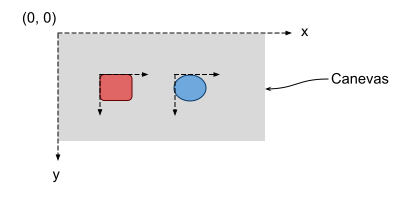

1. Description
Le dossier js contient un framework JavaScript, basé sur la librairie P5.js, permettant de réaliser de petites animations à des fins de démonstrations pédagogiques.
2. Utilisation
Copier et coller le dossier js/AnimationFramework au sein du projet destiné à utiliser le framework. Il doit être accessible par l'ensemble des pages HTML du projet et son arborescence inchangée.
Il faut inclure le fichier animation_controller.js dans chaque fichier contenant une animation.
Les fichiers nécessaires au bon fonctionnement du framework doivent être inclus en appellant la fonction `include_animation_files` en donnant le chemin du dossier contenant le framework.
Une animation est chargée avec la fonction `load_animation` en précisant le chemin de son fichier XML.
Le script suivant permet de charger l'animation contenue dans le fichier animation.xml et de l'afficher dans la balise ayant pour id anim1 :
<script src="js/AnimationFramework/animation_controller.js"></script>
<script>
include_animation_files("js/AnimationFramework/");
load_animation("animation.xml", "anim1", 1600, 900);
</script>
Vous pouvez modifier les paramètres suivants :
- animation.xml : il s'agit du fichier qui décrit l'animation
- anim1 : il s'agit de l'
id de la balise HMTL dans laquelle sera affichée l'animation
- 1600 : largeur en pixels de l'espace occupé par l'animation
- 900 : hauteur en pixels de l'espace occupé par l'animation
3. Fichier de description de l'animation
Ce fichier est au format XML, la DTD qui lui correspond est animation.dtd.
Le fichier XML se compose de 5 parties :
- speed : permet de modifier la vitesse de l'animation
- init : permet d'indiquer la présence d'un bouton avant le début de l'animation
- background : permet de spécifier une image de fond
- objects : permet de décrire les différents objets de l'animation
- programs : permet de décrire les actions associées aux objets
3.1 Les objets
Le point d'ancrage d'un objet est en haut à gauche de sa boite rectangulaire minimale telle qu'elle contienne tous ses points.
L'origine du canevas est en haut à gauche de ce dernier et est positif vers la droite et vers le bas.
L'image suivante permet d'illustrer ces deux informations :

Les objets suivent la DTD animation.dtd.
Pour résumer, les objets proposés par le framework sont les suivants :
- Zone de texte : object_text
- Image : object_image
- Rectangle : object_rectangle
- Polygone : object_polygon
- Cercle : object_circle
- Ellipse : object_ellipse
- Repère (pour graphiques) : object_landmark
- Grille (tableau) : object_grid
- Copie d'un objet : object_copy
Les attributs communs à tous les objets sont les suivants :
- id : Identifiant de l'objet (ce n'est pas un attribut XML mais la valeur du noeud object_xxx)
- x (0 par défaut) : Position de l'objet dans le canevas en x
- y (0 par défaut) : Position de l'objet dans le canevas en y
- background_color ("0, 0, 0" par défaut) : Couleur d'arrière-plan de l'objet
- background_transparent (true par défaut) : L'arrière-plan est transparent
- border_color ("0, 0, 0" par défaut) : Couleur de bordure de l'objet
- border_transparency (true par défaut) : La bordure est transparente
- border_size (1 par défaut) : Epaisseur de la bordure
- layer (0 par défaut) : Indice du plan de l'objet (les couches supérieures sont d'un indice plus élevé que les autres)
- visible (false par défaut) : L'objet est visible
- opacity (1 par défaut) : Opacité de l'objet (nombre décimal entre 0 et 1, 1 étant totalement opaque)
3.2 Les programmes
Les instructions suivent la DTD animation.dtd.